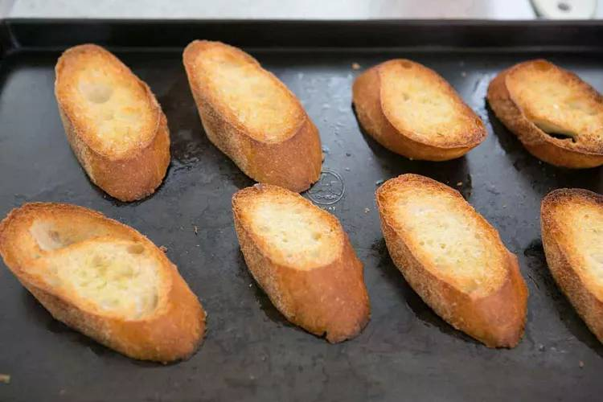

Peel and thinly slice the onions from root to stem. There should be about 10 cups of sliced onions in total.
Read More: How to Slice an OnionIn a 5 to 6 quart thick-bottomed pot, heat 3 tablespoons of olive oil on medium heat. Add the onions and toss to coat with the olive oil.
Cook the onions, stirring often, until they have softened, about 15 to 20 minutes.
Increase the heat to medium high. Add the remaining tablespoon of olive oil and the butter and cook, stirring often, until the onions start to brown, about 20 to 40 minutes. The amount of time will vary depending on your pot, stove, and onions.
Sprinkle with sugar (to help with the caramelization) and 1 teaspoon of salt. Continue to cook until the onions are well browned, about 10 to 15 more minutes.
Add the minced garlic and cook for a minute more.
Add the wine or vermouth to the pot and scrape up the browned bits on the bottom and sides of the pot, deglazing the pot as you go.
Add the stock, bay leaves, and thyme. Bring to a simmer, cover the pot and lower the heat to maintain a low simmer. Cook for about 30 minutes.
Season to taste with more salt and add freshly ground black pepper. Discard the bay leaves. Add brandy if using.
While the soup is simmering, line a sheet pan with parchment paper or foil and preheat the oven to 450°F with a rack in the upper third of the oven.
Brush both sides of the French bread or baguette slices lightly with olive oil (you'll end up using about a tablespoon and a half of olive oil for this).
Put in the oven and toast until lightly browned, about 5 to 7 minutes. Remove from oven.
Turn the toasts over and sprinkle with the grated Gruyere cheese and Parmesan. Return to oven when it's close to serving time and bake until the cheese is bubbly and lightly browned.
To serve, ladle soup into a bowl and transfer one cheesy toast onto the top of each bowl of soup.
Alternatively, you can use individual oven-proof bowls or one large casserole dish. Ladle the soup into the bowls or casserole dish. Cover with the toast and sprinkle with cheese. Put into the broiler for 10 minutes at 350° F, or until the cheese bubbles and is slightly browned.
